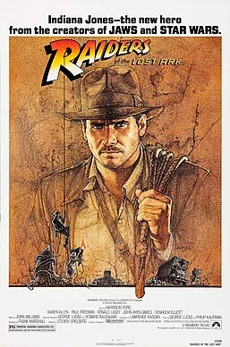
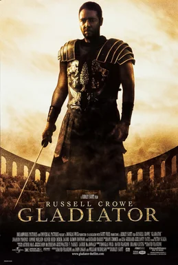

Explore film ↗
Explore film ↗Seven Samurai
Akira Kurosawa
THE ARCHIVE / 090
1984 · United States · Adventure
A film by Robert Zemeckis
A romance novelist travels to Colombia and becomes caught up in a search for a valuable stone.
Saved automatically in this browser. Ratings are your own, not critic scores.
Film reference: Source information ↗
Synopsis: original FRAME summary. Genre and displayed production country: concise editorial classifications; international co-productions may include additional countries.
Explore film ↗Akira Kurosawa
 Explore film ↗
Explore film ↗Akira Kurosawa

Explore film ↗Steven Spielberg

Explore film ↗Ridley Scott